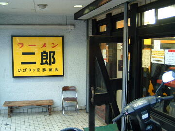
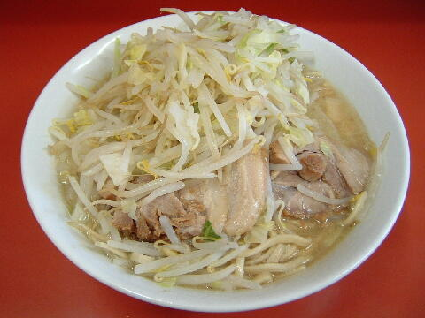

西東京市 谷戸町 3-27-24
日・祝（不定休）
11：30〜14：30 17：45〜21：30
土 10：30〜16：30

ラーメン 700円、ラーメン豚入り 850円
大ラーメン 800円、大ラーメン豚入り 950円
少なめ（豚１枚） 650円
ウーロン茶 100円
店員は、スキンヘッドの店主と女性助手。
白コショウとトウガラシ。
レンゲは無。ティッシュは無。名刺は有。
BGMは、ラジオ。
トッピングは、二郎標準。
ラーメン二郎 ひばりヶ丘駅前店 ひばりヶ丘駅前店のTwitter
「ラーメン二郎 ひばりヶ丘」でヤフー検索
「ラーメン二郎 ひばりヶ丘」でヤフーリアルタイム検索
「ラーメン二郎 ひばりヶ丘」でグーグル検索

ラーメン豚入り ニンニク
麺は、シナシナした食感でやや細めの白色をした直系二郎の麺。美味い。硬め不可。
ぶたは、小ぶりだが簡単に崩れるほど柔らかいバラ肉。
スープは、ブタポタに乳化しているもの。肉片や背脂がゴロゴロ入っている。
ヤサイは、モヤシ8：キャベツ2のクタ野菜。ノーコールでも多目。
ニンニクは、細かく刻まれたニンニク。
ＰＣ店